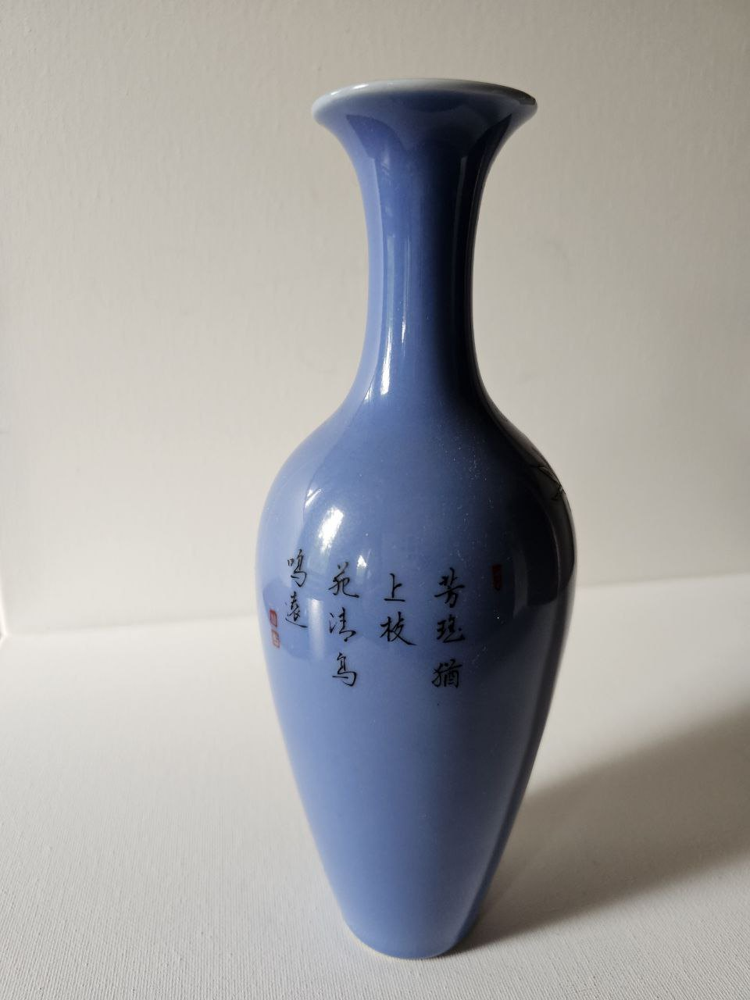
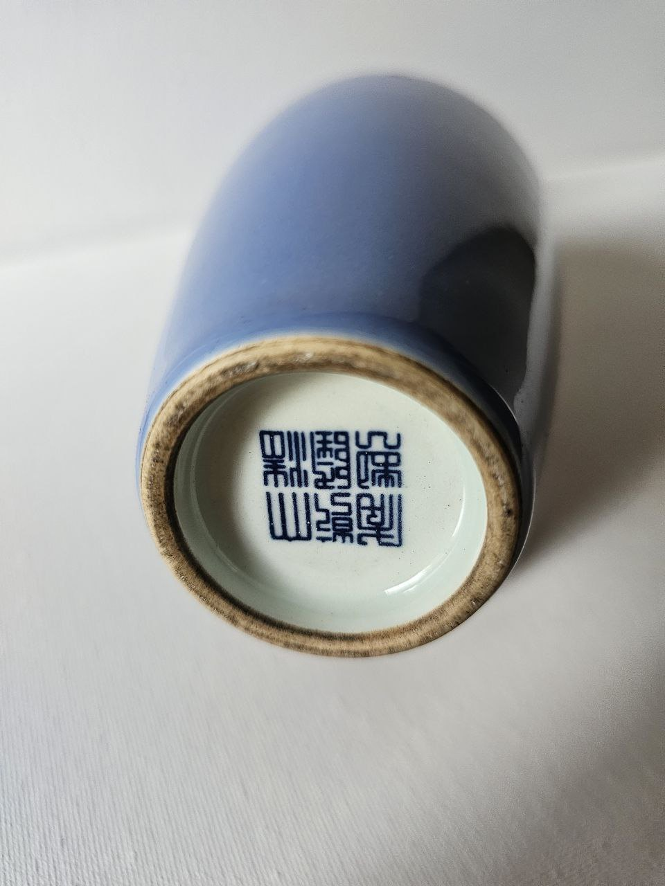
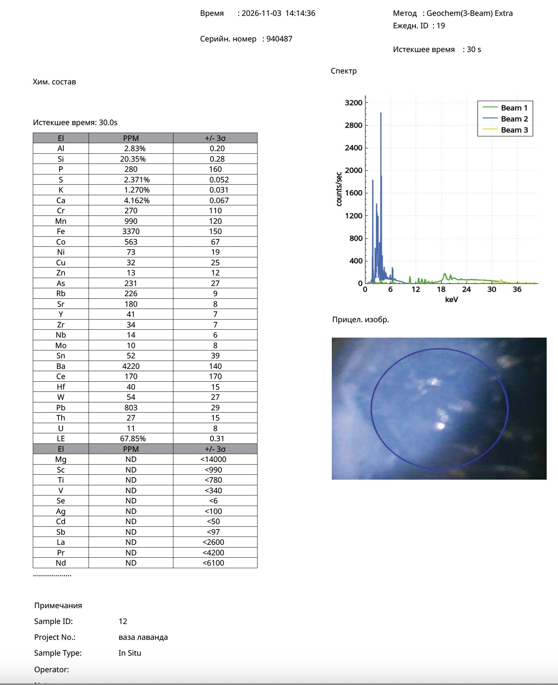

Research Article · Companion to Reference Object ro-qing-083
X-Ray Fluorescence Analysis of a Lavender-Glazed Vase with a Poetic Inscription and Bird Decoration: Chemical Composition of an Experimental Monochrome Glaze
Nona Dronova — Zenodo, 2026 — Monochrome Lavender Glaze · pXRF
Note. The analysed vase is a companion piece in the collection covered with the same lavender-blue glaze as the bottle vase RO-QING-083; the analysis characterises this shared glaze.
Abstract
This article presents the results of portable X-ray fluorescence (pXRF) analysis of a decorative vase covered with a lavender monochrome glaze and decorated with poetic calligraphy and images of birds.
The investigation was carried out by portable X-ray fluorescence spectroscopy on the glazed surface of the vessel.
The results show a silica-rich, calcium-bearing glaze containing cobalt, manganese, iron, barium and strontium.
The combination of cobalt (563 ppm), manganese (990 ppm), iron (3370 ppm) and barium (4220 ppm) deserves particular attention and can be regarded as a characteristic chemical signature contributing to the unusual lavender tone of the glaze.
The composition of the material indicates the use of a sophisticated high-temperature decorative glaze technology specifically developed to achieve a characteristic monochrome visual effect.
Keywords: monochrome glaze; lavender glaze; Chinese ceramics; archaeometry; X-ray fluorescence analysis; cobalt; barium; manganese; high-temperature glaze.
1. Introduction
Monochrome glazes occupy a special place in the history of Chinese ceramic art.
Unlike painted ceramics, the aesthetic effect of monochrome wares is achieved not through pictorial decoration but through the complex interaction of glaze chemistry, firing conditions and the optical properties of the glassy phase.
Among the rarest varieties are lavender, lilac and grey-violet glazes, whose production required careful control of both colourants and fluxing components.
The present study examines the chemical composition of a decorative vase with a monochrome lavender glaze, complemented by poetic calligraphy and images of birds.
2. Description of the Object
The object under study is a decorative ceramic vase covered with a monochrome glaze of a complex lavender tone.
The decoration includes:
- a poetic calligraphic inscription;
- bird motifs;
- a monochrome glazed ground;
- a glossy, translucent surface.
The glaze shows subtle colour transitions ranging from pale lilac to grey-blue tones.
The surface has a pronounced vitreous lustre characteristic of well-developed high-temperature glaze systems.


3. Materials and Methods
The investigation was carried out by portable X-ray fluorescence spectroscopy.
| Parameter | Recorded value |
|---|---|
| Instrument serial number | 940487 |
| Analytical mode | Geochem (3-Beam) Extra |
| Date | 3 November 2026 |
| Acquisition time | 30 seconds |
| Sample ID | 12 (“vaza lavanda”) |
| Daily measurement ID | 19 (14:14:36) |
| Measured area | Glazed surface of the vase |
| Measurement type | In situ, non-destructive |
An area of the glazed surface of the vase was selected for analysis.
4. Results
Table 1. Principal chemical components of the glaze.
| Element | Concentration |
|---|---|
| Si | 20.35% |
| Al | 2.83% |
| Ca | 4.162% |
| K | 1.270% |
| S | 2.371% |
| Fe | 3370 ppm |
| Mn | 990 ppm |
| Co | 563 ppm |
| Ba | 4220 ppm |
| Sr | 180 ppm |
| Rb | 226 ppm |
| Pb | 803 ppm |
The results show that the glaze system is characterised by enrichment in silica and calcium combined with relatively low aluminium concentrations.
5. The Role of Calcium in the Glaze System
Calcium is the main fluxing component of the glaze under study.
The measured concentration is Ca = 4.162 wt%.
Calcium promotes the formation of a transparent glassy structure and improves the flow of the glaze during firing.
Together with silicon and potassium, calcium forms the fundamental basis of a high-temperature silicate glaze.
6. Cobalt and the Formation of the Lavender Colour
The presence of cobalt is one of the most significant features of the analytical results.
The measured concentration is Co = 563 ppm.
Cobalt is one of the most powerful colourants used in ceramic glazes.
Even at relatively low concentrations, cobalt can produce blue, violet and lavender tones.
In this glaze cobalt is not present on its own but together with iron and manganese, forming a complex colouring system.
7. The Influence of Iron, Manganese and Chromatic Elements
In addition to cobalt, the glaze contains:
- Fe = 3370 ppm;
- Mn = 990 ppm.
Both iron and manganese have an important influence on the colour of the glaze.
The simultaneous presence of cobalt, iron and manganese creates a complex chromatic system capable of producing transitions between blue, grey, violet and lavender tones.
This chemical combination provides a plausible explanation for the characteristic lavender tone of the glaze.
8. Barium as a Technological Component
One of the most unusual results of the investigation is the elevated barium concentration.
The measured value is Ba = 4220 ppm.
The barium concentration in the glaze is considerably higher than that of most other trace elements.
Its presence indicates the use of specific mineral raw materials or specialised glaze ingredients.
Together with calcium and strontium, barium forms a characteristic complex of alkaline-earth elements in the glaze.
9. Technological Characteristics of the Glaze
The chemical composition of the examined surface reveals a number of notable technological characteristics:
- A silica-rich glassy matrix.
- Calcium as the main fluxing component.
- Cobalt acting as the chromophore element.
- Manganese and iron contributing to colour modulation.
- An elevated barium content.
- A relatively low lead concentration.
The combination of these components forms a complex decorative glaze system specifically developed to create a rare monochrome visual effect.
10. Archaeometric Interpretation
The examined vase is a significant example of the artistic technology of monochrome glazes.
The diagnostically most important components of the glaze are:
- cobalt;
- manganese;
- iron;
- barium;
- calcium.
The lavender tone can be explained by the interaction of several chromophore elements dispersed in a single glassy phase.
The chemical composition indicates a deliberate adjustment of the raw materials in order to achieve a refined decorative monochrome appearance.
11. Conclusion
X-ray fluorescence analysis of the lavender-glazed vase established the following characteristics:
- The glaze contains significant concentrations of silicon (20.35 wt%) and calcium (4.162 wt%).
- Cobalt (563 ppm), manganese (990 ppm) and iron (3370 ppm) are present as important chromophore elements.
- The most unusual component detected is barium (4220 ppm).
- The colouring system is based on the joint presence of cobalt, manganese and iron.
- The glaze represents a complex monochrome composition created at high temperature to produce a characteristic lavender visual effect.
General conclusion. The chemical composition of the examined glaze reflects the use of a specialised decorative technology based on a multi-component colouring system. The combination of cobalt, iron, manganese, calcium and barium creates a unique archaeometric signature that characterises the artistic lavender glaze of this vessel and testifies to an advanced approach to monochrome ceramic colouring.
Original pXRF Protocol
Portable XRF analyser, serial no. 940487 — 3 November 2026

Fig. 3. Measurement ID 19 — lavender glaze (element table, spectrum, aiming image). Also detected: Cr 270, Ni 73, As 231, Y 41 ppm; LE 67.85%. Click to open full size.
Suggested Citation
Dronova, N. (2026). X-Ray Fluorescence Analysis of a Lavender-Glazed Vase with a Poetic Inscription and Bird Decoration: Chemical Composition of an Experimental Monochrome Glaze. Zenodo. https://doi.org/10.5281/zenodo.23957658